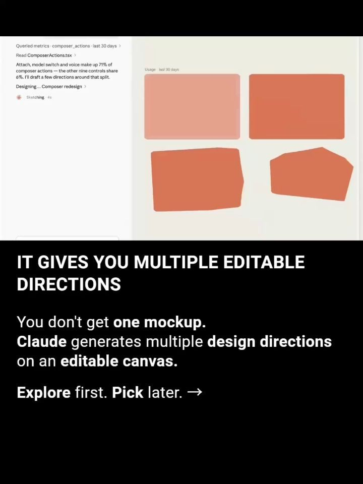
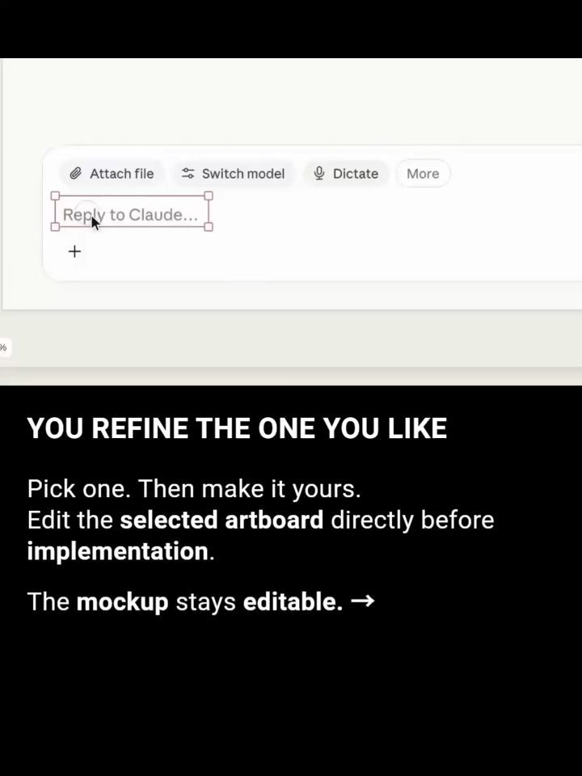
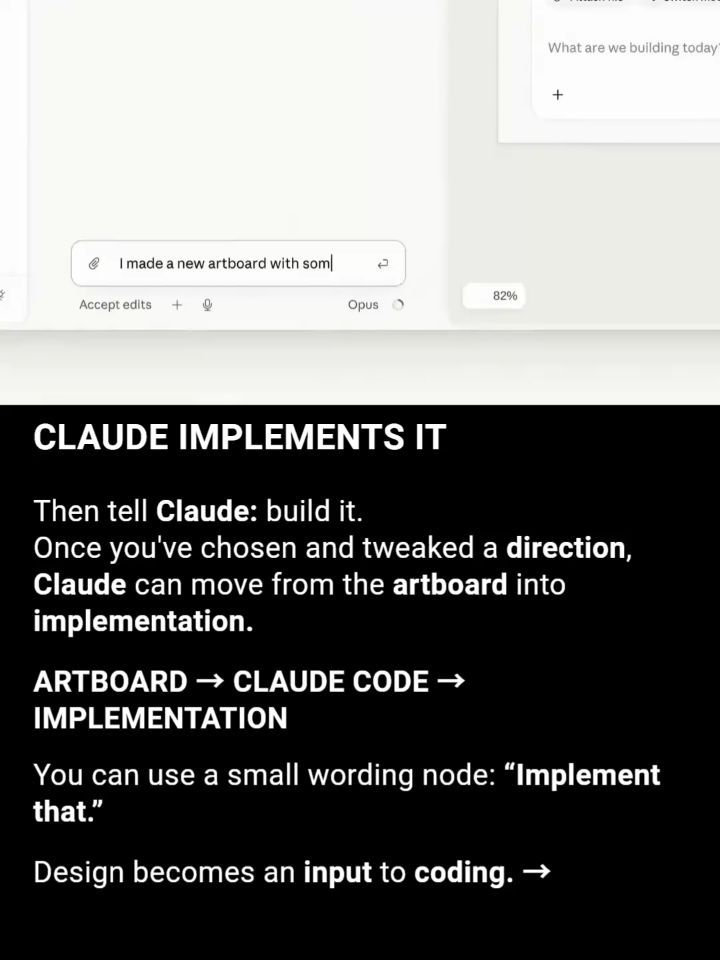
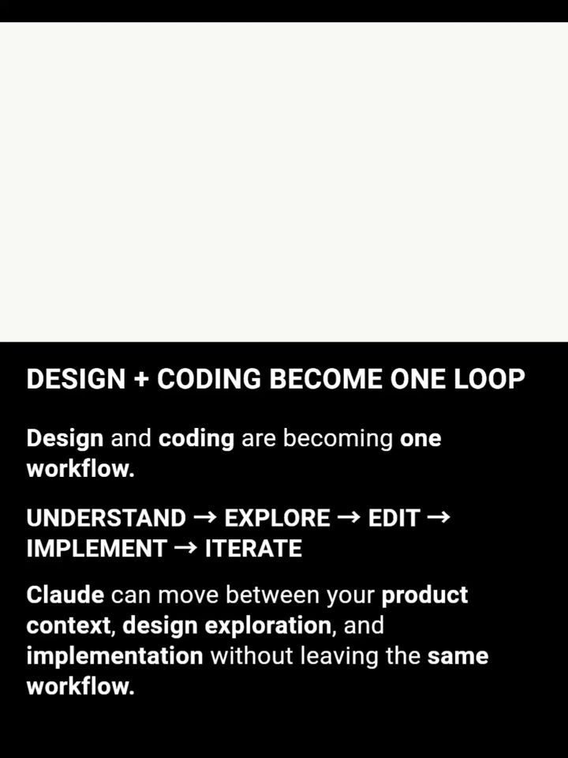

Instagram Post

Claude Code just got a "/design" skill. 👀
carousel (7 slides) (enriched by ClaudeClaw)
Summary
Claude Code CLAUDE CODE JUST RELEASED “/DESIGN” – BRINGIN... | /design redesign Accept edits Opus /DESIGN STARTS THE PRO... | /design redesign the composer based on what functions peo... | Usage · last 30 days A · Frequency-first Composer actions... | B I U | What are we building today? + I made a new artboard with ... | /design PREVIEW in Claude Code DESIGN + CODING BECOME ONE...
Caption
Claude Code just got a "/design" skill. 👀
It brings Claude Design’s artboard workflow directly into Claude Code — letting you:
→ Explore multiple UI directions
→ Use your existing codebase and product context
→ Refine designs on an editable canvas
→ Pick your favorite direction
→ Have Claude implement it
The bigger shift? "Design exploration and coding are starting to happen in the same workflow."
This is currently a "research preview", available on Pro, Max, Team, and Enterprise.
Would you actually use `/design` before building a feature? 👇
Follow @vyzual.ai for more AI, tech, and product breakdowns.
Credit: Original content belongs to "Claude / Anthropic and the respective original creator(s)". This post is an educational/commentary breakdown and is not affiliated with or endorsed by Anthropic.
Content notice: We respect creators and rights holders. If any content used in this post belongs to you and you would like it removed, please DM @vyzual.ai and we’ll review and remove the relevant content.
1
Claude Code CLAUDE CODE JUST RELEASED “/DESIGN” – BRINGING DESIGN EXPLORATION DIRECTLY INTO THE CODING WORKFLOW. vyzual.ai
A man with dark curly hair and glasses smiles while speaking into a microphone, with a "Claude Code" logo in the upper left and text describing a product release overlaid on a blue background.
2
/design redesign Accept edits Opus /DESIGN STARTS THE PROCESS It starts with /design. Ask Claude to explore a feature before you build it. Example: /design a few options for {feature} Claude turns the prompt into design directions. →
The image displays a digital interface with a text input field showing "/design redesign" and a presentation slide below it, explaining how to use a "/design" command with an AI assistant named Claude.
3
/design redesign the composer based on what functions people use the most Queried metrics - composer_actions - last 30 days > Read ComposerActions.tsx > Attach: model switch and voice make up 79% of composer actions - the o Crunching... 1s IT USES REAL PRODUCT CONTEXT Claude doesn't design in a vacuum. It reads your codebase and product context before generating the designs. Real product usage -> better design directions. ->
The image shows a split screen, with the top half displaying a white interface with text related to design and code metrics, and the bottom half featuring a black background with white text promoting an AI named Claude and its ability to use real product context.
4
Usage · last 30 days A · Frequency-first Composer actions last 30 days 2.1M events Three actions do most of the work 71%
5
B I U . 1. Link Switch model Dictate More What are we building + YOU REFINE THE ONE YOU LIKE Pick one. Then make it yours. Edit the selected artboard directly before implementation. The mockup stays editable. →
The image displays a split view, with the top showing a user interface for text input and editing, and the bottom showing text on a black background describing a design refinement process.
6
What are we building today? + I made a new artboard with some riffs. Implement that| Accept edits + Opus 82% CLAUDE IMPLEMENTS IT Then tell Claude: build it. Once you've chosen and tweaked a direction, Claude can move from the artboard into implementation. ARTBOARD → CLAUDE CODE → IMPLEMENTATION You can use a small wording node: “Implement that.” Design becomes an input to coding. →
The image displays a split view, with the top showing a partial screenshot of a chat interface and the bottom featuring a black slide with white
7
/design PREVIEW in Claude Code DESIGN + CODING BECOME ONE LOOP Design and coding are becoming one workflow. UNDERSTAND → EXPLORE → EDIT → IMPLEMENT → ITERATE Claude can move between your product context, design exploration, and implementation without leaving the same workflow.
The image displays a presentation slide with a light-colored top section featuring a title and a dark-colored bottom section containing bullet points and explanatory text about design and coding workflows.
All slides



